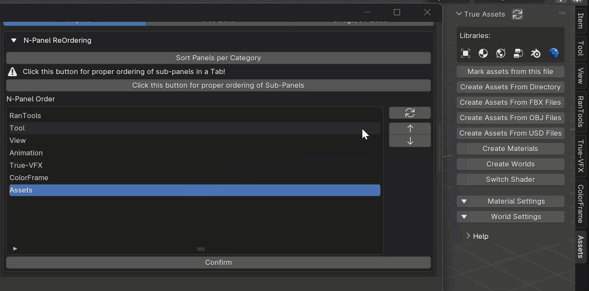
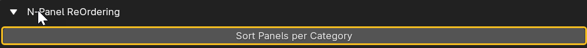
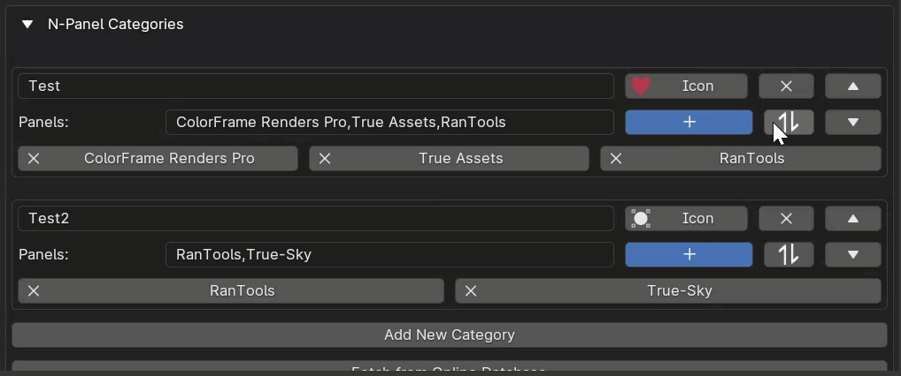

N-Panel ReOrdering
Clean Panels provides you with the flexibility to rearrange your tabs in the N-Panel according to your preferences.
Reordering the N-Panel
To get started, follow these steps:
Enable ‘Show Advanced Options’ in the addon preferences.
Once activated, two new sections will appear: one for N-Panel Reordering and another for N-Panel Renaming.
Navigate to the Reordering section, where you’ll find a list of addons.
Next to the list, you’ll find two arrows (up and down) that allow you to move the selected tab upward or downward.
Press “Confirm” to apply your changes, or simply restart Blender.

Sorting per category
Enable this option to sort the N-Panel based on the order of addons in your N-Panel Filtering categories. 
You can sort the addons in your filtering categories by using the Reordering button. 